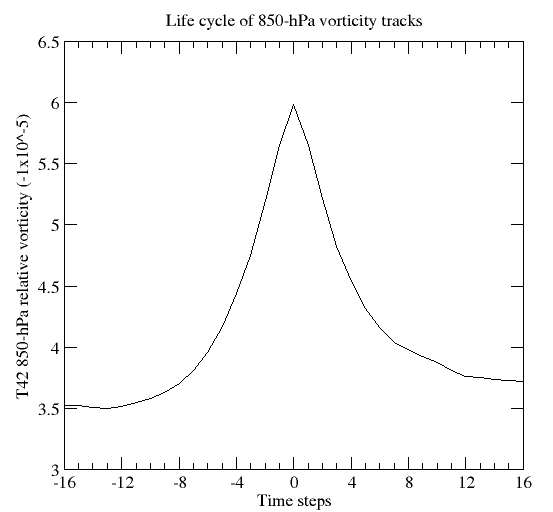

Life Cycle Compositing
♻️ Temporal compositing using lifecycle utility¶
The algorithm performs compositing of atmospheric fields at different stages of a system’s life cycle relative to its time of maximum intensity (e.g., peak 850-hPa relative vorticity). This method allows analysis of the temporal evolution of weather systems by averaging selected variables over multiple cases.
How it works:¶
• Required fields (e.g., mean sea level pressure, temperature, precipitation) must be previously added to the track files.
➡️ See the Calculation of Additional Fields section for more details on how to add fields to the tracks.
• These values are interpolated onto a radial grid centered on the system, using a prescribed radius (commonly 15° or 20°).
• A subset of tracks is usually selected for compositing (e.g., top 10% most intense systems, based on a chosen metric).
• For each track, the algorithm extracts the chosen fields at multiple time steps before and after the peak intensity.
• These field values are then averaged across all selected tracks to generate a composite life cycle view.
Key points:¶
✓ Individual cases retain mesoscale structures.
✓ Composite fields reveal common features but smooth out finer details (e.g., fronts).
✓ Uncertainty can be estimated from the standard deviation across all cases.
⚠️ Note: While the method allows wide time windows around the peak, this may introduce noise due to variability in system lifetimes. → To minimize this, restrict the analysis to systems with a minimum lifetime threshold.
How to run:¶
Use the following command:
utils/bin/lifecycle < lifecycle.in
📥 Download lifecycle.in
Use this version for track files without additional fields.
📥 Download lifecycle_addflds.in
Use this version for track files with additional fields.
→ Replace Field in the input file with the number corresponding to the field you want to composite (use 0 for the default reference field).
Output:¶
The algorithm writes results to history.dat, containing the mean value of the selected field at each timestep relative to the system’s peak intensity.
Visualization:¶
The figure below shows an example of the composite life cycle of winter cyclones in the Southern Hemisphere, based on T42 850-hPa relative vorticity.
Figure 1

Figure 1. Life cycle composite of all cyclonic systems identified using 850-hPa vorticity in the Southern Hemisphere. Field shown is T42-resolution 850-hPa vorticity, centered at the time of maximum intensity. Based on ERA5 data (1979–2020), computed from 16,998 tracks.